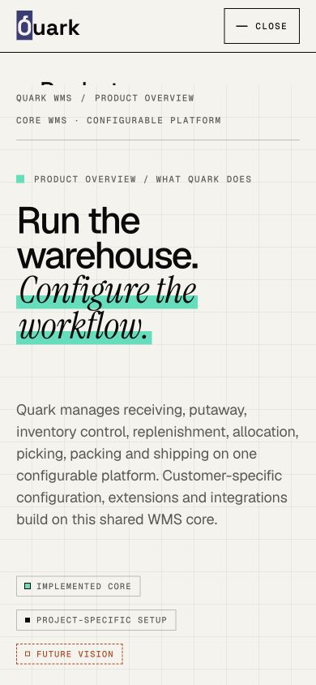
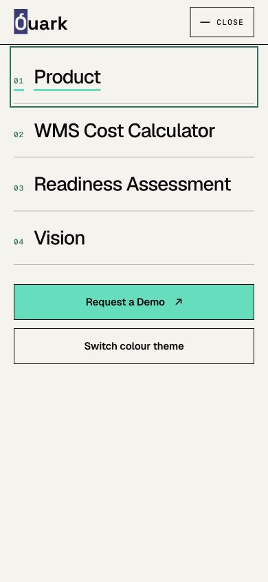
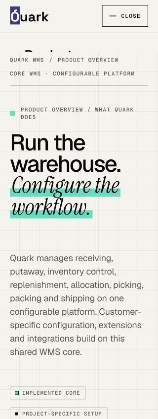
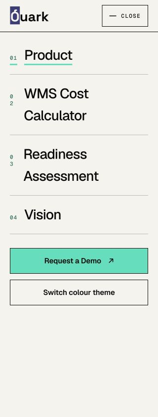
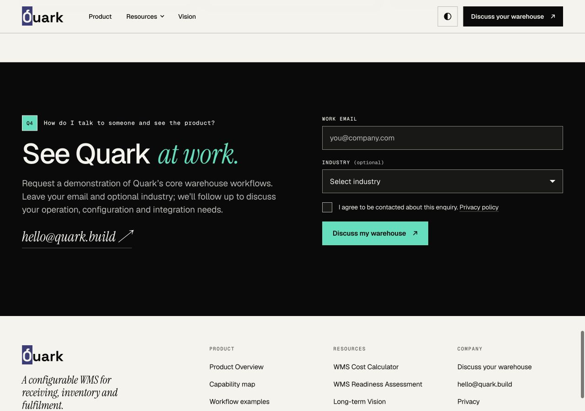
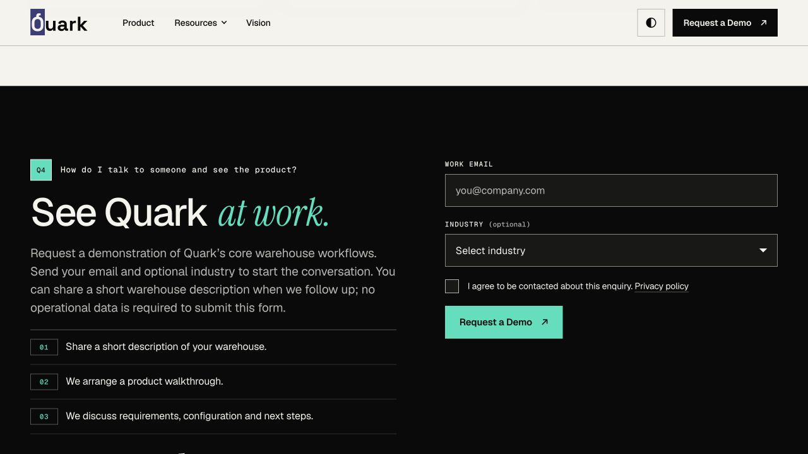
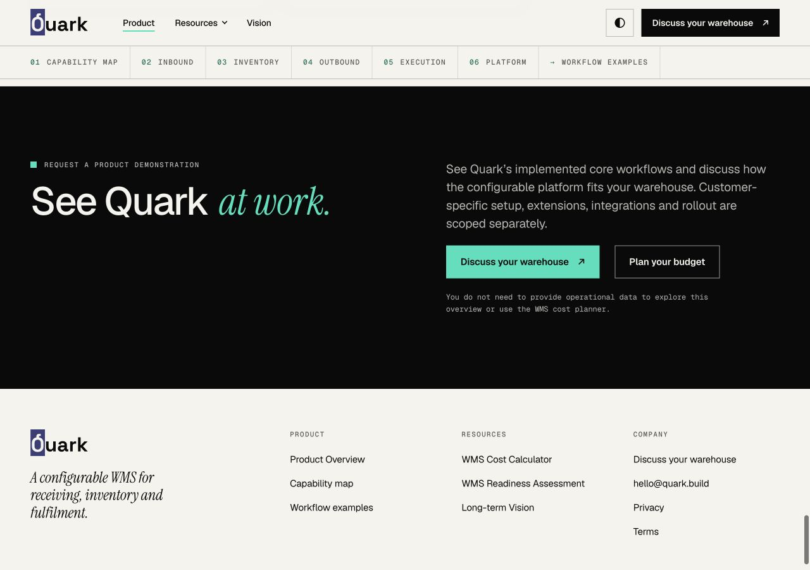
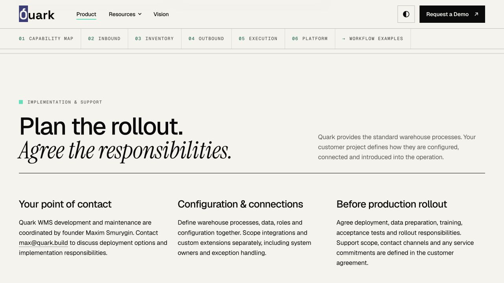
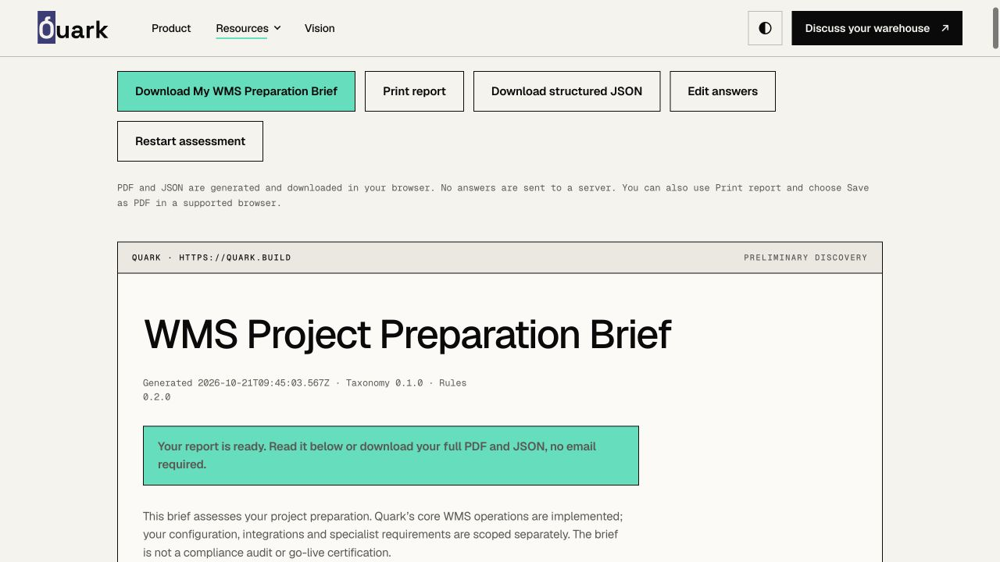
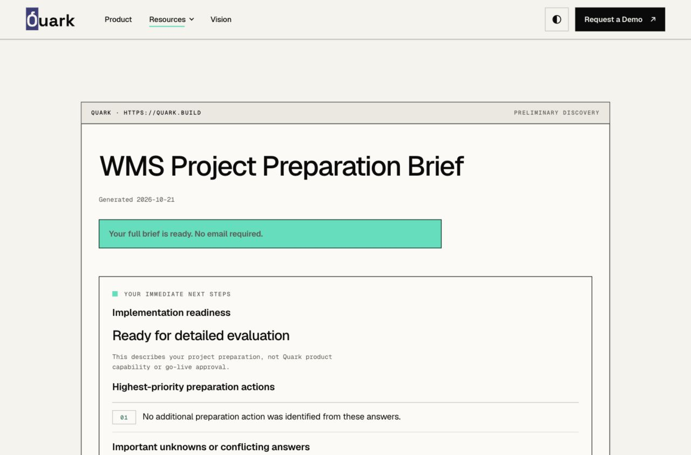

21 октября 2026. Baseline: 029347ae5c4c62a728c838c5d6930d0f7293eb3f. Production не изменён. Исправления готовы к отдельному одобрению; публикация видео не является зависимостью.
| Статус | Область | Результат |
|---|---|---|
| FIXED / VERIFIED | P0 Mobile navigation | Устранён фиксированный containing block из-за backdrop-filter шапки: раньше панель имела 41 px при 844 px viewport. Теперь 780 px, прокрутка при низком окне, safe-area, блокировка фона, Tab, Shift+Tab, Escape и возврат фокуса. Пять мобильных ширин и desktop; все пять ссылок доступны для нажатия. |
| FIXED / VERIFIED | P0 Metadata | Убраны available build, capability scope и двусмысленное позиционирование. Обновлены title, description, OG, Twitter и описание SoftwareApplication. Канонические URL, sitemap, robots и правила индексации сохранены. |
| FIXED / REVIEW | P1 Implementation & Support | Компактный раздел в /product: ответственный контакт, deployment, конфигурация, интеграции, приёмка и договорные обязанности поддержки. Без выдуманных SLA, часов поддержки и обязательств hosting. EU entity оставлено по прямому указанию основателя; не добавлено утверждение о зарегистрированной компании. Privacy продолжает называть фактического оператора. |
| FIXED / VERIFIED | P1 Demo flow | Request a Demo ведёт к /#contact. Форма сохраняет те же поля, согласие и provider. Рядом описаны три шага без обещания сроков ответа. |
| FIXED / VERIFIED | P2 Assessment | В начале результата: готовность проекта, до трёх приоритетных действий без выдуманных проблем, важные неизвестные и ссылки на полные результаты/экспорт. Скоринг, анкета, JSON schema и PDF renderer не изменены. |
| WAITING FOR YOUTUBE URLS | P1.3 Videos | Четыре независимых слота, reusable click-to-load компонент и отдельный publication gate. Сейчас ни видео, ни заглушки, ни сторонние запросы не опубликованы. Стабилизация выпускается независимо. |
| VERIFIED | Доставка формы | Один успешный разрешённый браузерный тест показал страницу Formspree «Форма была успешно отправлена». Основатель подтвердил получение письма с темой QUARK-STABILIZATION-TEST 2026-10-21 во входящих. HTTP-ответ и receipt не смешиваются; backend не изменён. Прямой CLI-запрос был заблокирован Cloudflare 1010. |
| URL | Title | Description |
|---|---|---|
| / | Quark WMS — Configurable Warehouse Management System | Quark WMS runs receiving, inventory control, fulfilment and RF warehouse workflows on a configurable platform. Request a product demo. |
| /product | Quark WMS Product Overview — Operations & Configuration | See how Quark WMS manages receiving, putaway, inventory, wave planning, picking and shipping, with RF execution and customer-specific configuration. |
| /vision | Quark WMS Vision — Future AI Onboarding & Support | Explore Quark’s future AI Onboarding and AI Support vision, built around its implemented core WMS and configurable platform. |
| /wms-cost | How Much Does a Warehouse Management System Cost? — Quark | Build a WMS budget from your own inputs: licensing, implementation, integrations, devices, support and three- or five-year total cost of ownership. |
| /tools/wms-readiness-assessment | WMS Readiness Assessment — Free Warehouse Evaluation Tool | Assess your warehouse project preparation, identify open requirements and get a free WMS preparation brief with practical next steps. |
OG и Twitter согласованы с намерением каждой страницы. Vision описывает будущие AI-возможности вокруг работающей WMS; Assessment оценивает подготовку проекта клиента.
| Страница | Performance | Accessibility | Best Practices | LCP ms | CLS |
|---|---|---|---|---|---|
| after-home | 99 | 100 | 100 | 1652 | 0.00059 |
| after-product | 91 | 100 | 100 | 2822 | 0 |
| before-home | 92 | 100 | 100 | 2648 | 0 |
| before-product | 90 | 100 | 100 | 2918 | 0 |
Lighthouse 13.5.0, mobile simulation, одинаковая машина и локальные static-серверы для baseline и candidate. Это лабораторные единичные выборки, не полевые Core Web Vitals. SEO 66 в обеих версиях обусловлен в том числе намеренным noindex локальных QA-серверов; production robots/canonical проверены отдельно. YouTube/ytimg/googlevideo запросов в четырёх Lighthouse-прогонах — 0.










Новых аналитических событий и сервисов нет. Ответы Assessment остаются локальными; JSON и PDF формируются в браузере. Реальный delivery-тест содержит только разрешённый рабочий контакт владельца и тестовую метку; персональные данные и credentials в отчёт не включены. Formspree, API handlers, data retention и настройки аналитики не менялись.
Stabilization commit: c13878f. Независимая неактивная видеоподготовка: d24ac09. Preview URL указан в PR и итоговом сообщении. План выпуска и rollback — в RELEASE.json; видео — в VIDEO-INTEGRATION.html. После approval gate новая разработка сайта не продолжается.